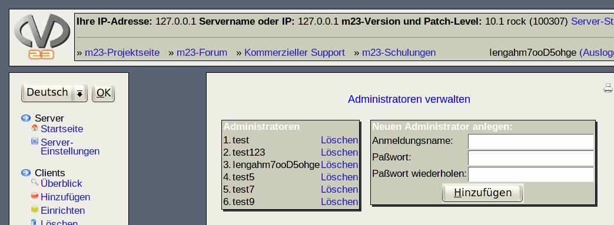

In diesem Dialog können Sie Administratoren löschen und hinzufügen. Administratoren sind Personen, die Zugriff auf die m23-Administrations-Oberfläche des aktuellen m23-Servers haben sollen.

- Fügen Sie Administratoren hinzu, indem Sie Login-Name und Paßwort angeben und anschließend auf ''hinzufügen'' klicken.
- Sie ''Löschen'' einen Administrator durch einen Klick auf den Link hinter dem an Login-Namen. Sollte nur ein Administrator existieren, so kann dieser nicht gelöscht werden.
root
2019-07-18